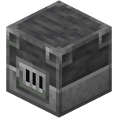
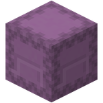

TEORIA DO COBRE CRU
Viabilidade Macroeconômica e Estabilização Monetária em Economias Virtuais Industrializadas
O Fim da Hiperinflação no Minecraft
Toda economia virtual em Minecraft eventualmente colapsa devido à hiperinflação gerada por fazendas automáticas (farms) ou deflação paralisante. Moedas tradicionais como Diamantes, Ferro e Esmeraldas possuem falhas estruturais massivas.
A Teoria do Cobre Cru demonstra matematicamente e mecanicamente por que minérios brutos — especialmente o Cobre Cru — são a única solução para criar uma economia de commodity perfeita, imune a fazendas automáticas, sem a necessidade de regras autoritárias por parte da administração do servidor.
100% Manual
Impossível de ser farmado via mobs. O suprimento é sempre fruto de trabalho ativo.

Dreno Natural
A fundição destrói irreversivelmente a moeda, controlando a inflação (Money Sink).

Escalável
Fácil conversão em blocos. Mais de 15 mil moedas por Shulker Box.